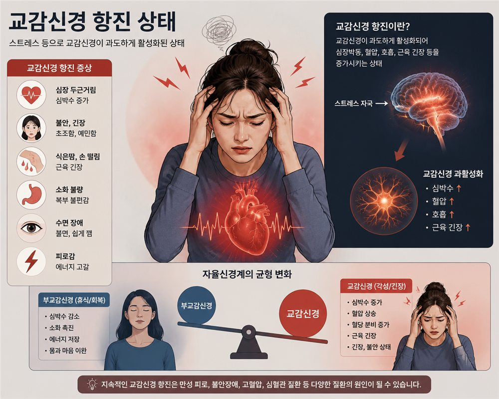
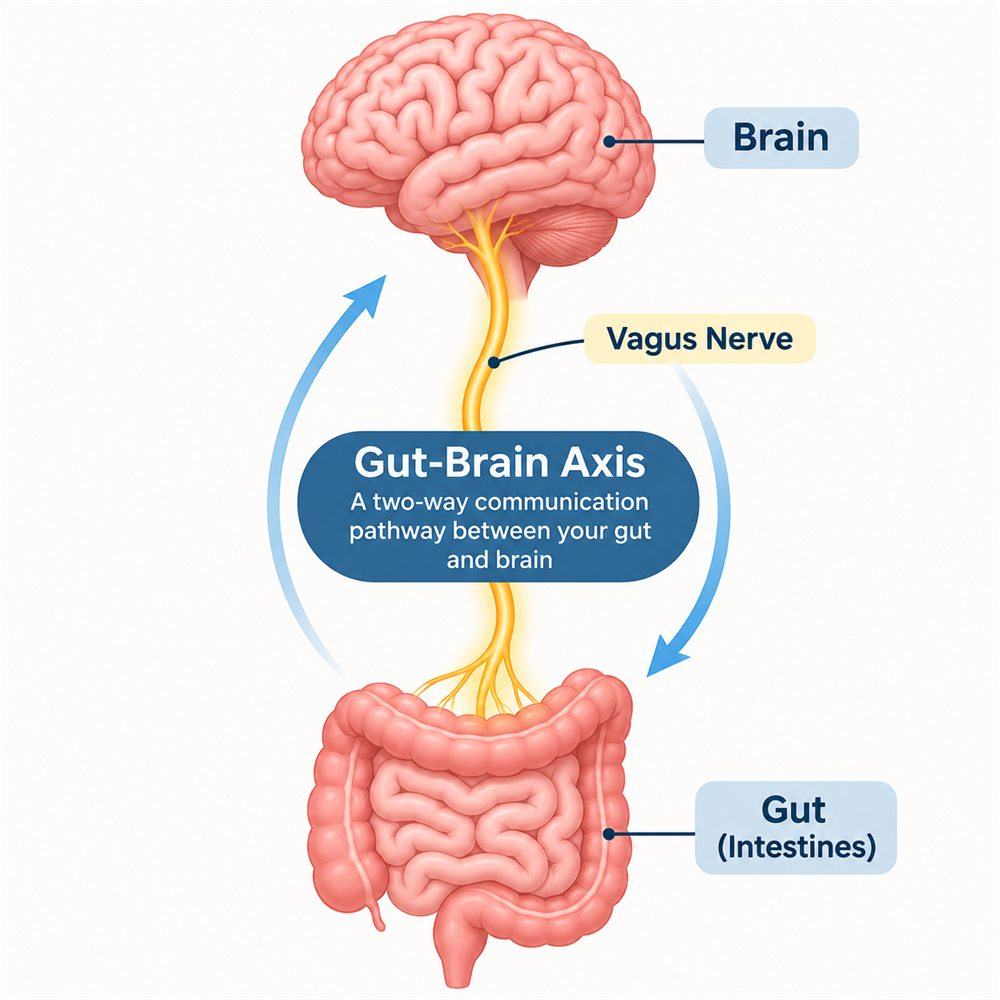
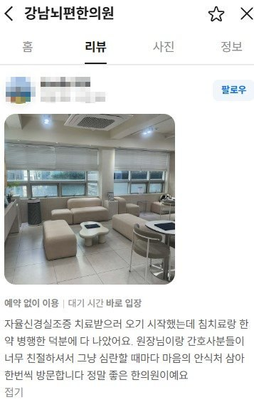
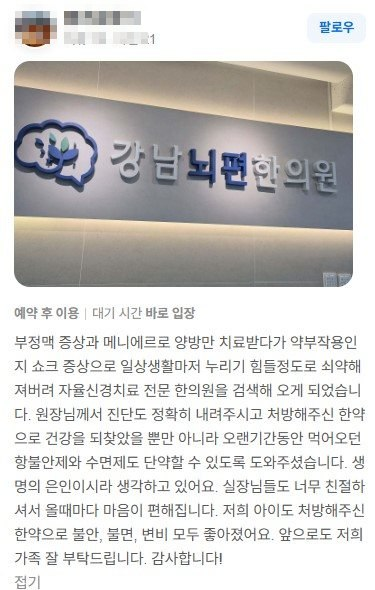

한의학+미국 정골의학+통합의학3가지 관점으로 만성 뇌신경질환·자율신경질환을 진료합니다
한의학
문진·맥진·복진 등 한의학적 진단을 바탕으로 침·약침·한약·추나 등 보완 진료의 적합성을 살핍니다.
미국 정골의학
목·척추·근골격계의 구조와 신경 기능의 연결을 함께 보는 관점으로 증상의 배경을 살핍니다.
통합의학
뇌파·자율신경·혈관 검사 등 객관적 검사와 기존 병원 진료 내용을 함께 고려해 진료 방향을 세웁니다.
내 증상 확인
- 자다가 자주 깨고 심장이 두근거립니다.
- 긴장할 때 숨이 막히거나 어지럽습니다.
- 피로가 오래 지속되고 의욕이 떨어집니다.
- 속쓰림·복통·배변 변화가 반복됩니다.
어떤 질환인지 선택해 보세요
증상 양상에 맞는 안내를 선택하면 원인·감별·진료 방향을 자세히 볼 수 있습니다.

불면증
피곤한데도 잠이 오지 않거나 자다가 심장이 두근거려 깨나요? 불면증은 단순히 수면시간만의 문제가 아니라 낮 동안의 피로와 집중 저하까지 이어…
자세히 보기 →
불안 공황증상
갑자기 심장이 빨리 뛰고 숨이 막혀 큰일이 날 것 같은 두려움이 밀려오나요? 공황증상은 몸의 경보 반응이 크게 나타나는 경험일 수 있지만 비…
자세히 보기 →
만성피로·우울증
충분히 쉬어도 몸이 무겁고 의욕이 떨어지나요? 만성피로와 우울감은 비슷하게 나타나기도 하지만 서로 다른 문제이므로 원인을 나누어 살펴야 합니…
자세히 보기 →
위염·식도염
조금만 먹어도 속이 더부룩하거나 누웠을 때 신물이 올라오나요? 위염·기능성 소화불량·역류성 식도염은 증상이 겹쳐도 원인과 치료 방법이 같지 …
자세히 보기 →과민대장증후군
회의나 외출을 앞두면 배가 아파 화장실부터 찾으시나요? 과민대장증후군은 반복되는 복통과 배변 양상의 변화가 함께 나타나는 대표적인 장-뇌 상…
자세히 보기 →원인과 감별
부정맥·갑상선 이상, 수면장애, 우울·불안장애, 위장질환 등 다른 원인을 함께 평가합니다.
강남뇌편한의원의 진료 방향
생활리듬과 수면·스트레스·위장 기능을 함께 점검하고 개별적으로 보완 한의학 진료를 상담합니다. 각 질환의 표준치료 및 전문의 협진을 우선합니다.

자율신경실조증 치료 후기
환자분이 직접 남긴 후기입니다.




환자분이 직접 작성하신 후기이며, 치료 결과와 경과는 개인마다 다를 수 있어 모든 분께 같은 효과를 보장하지 않습니다.
증상이 반복된다면 진료 상담으로 확인해 보세요
한의학 · 미국 정골의학 · 통합의학, 3가지 관점의 진료
증상 시작 시기, 반복되는 상황, 이전 검사 결과, 현재 복용약을 알려주시면 도움이 됩니다.